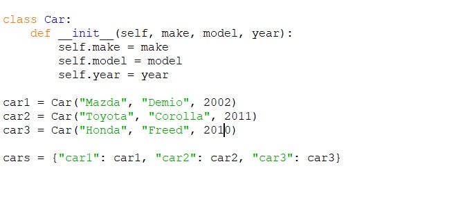

Data Structures

Efficient and organized storage and retrieval of data is made possible by data structures in object-oriented development, which is very important. Many of the core ideas of object-oriented programming, such as encapsulation, inheritance, and polymorphism, require data structures to work. I will talk about three different data structures that are useful for object-oriented development and provide some examples for each.
Lists are one of the most commonly used data structures in Python. They are ordered collections of items that can be of any type. Lists are mutable, meaning that their contents can be changed after they are created. Lists are often used in object-oriented development to store objects or data associated with objects. For example, let's say we have a class called Person with attributes such as name, age, and address. We can create a list of Person objects as shown below
Here, we create a list called people that contains three Person objects.
Dictionaries are another commonly used data structure in Python that support object-oriented development. They are collections of key-value pairs where each key is associated with a value. Dictionaries are mutable and can be used to store and retrieve data efficiently, based on a given key. In object-oriented development, dictionaries are often used to store attributes of an object as key-value pairs. For example, let's say we have a class called Car with attributes such as make, model, and year. We can create a dictionary of Car objects like shown below;
Module Reflections
UML (Unified Modeling Language) is a graphical language used in software engineering to create visual models of software systems. It was created in the 1990s and has since become a standard notation for software modeling.
UML provides a set of symbols and diagrams for representing different aspects of software systems, including classes, objects, components, and interactions between them. Some of the commonly used UML diagrams include use case diagrams, class diagrams, sequence diagrams, state machine diagrams, activity diagrams, and component diagrams.
UML is useful for documenting, analyzing, and designing software systems, and it can help developers and stakeholders communicate and understand the structure and behavior of a system. It is a flexible and adaptable language that can be used for a wide range of software development projects, from small applications to complex enterprise systems.
This module has been very helpful to me in that it has introduced various UML tools that will assist me in my software development journey beyond the program. The UML tools have easy to understand processes that guides us in all the stages of software development and in the process document the process for future referencing.
Overall, UML is an essential tool for software engineers and developers, and its use can help ensure that software systems are designed and developed in a clear, organized, and efficient manner.